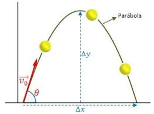
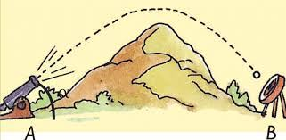

¿Que es un proyectil en 2D?
En un ataque de ira inducido por fructosa, decides lanzar por los aires un limón que sigue la curva punteada que mostramos en el siguiente diagrama. En este caso, consideramos que el limón es un proyectil bidimensional, pues está volando por el aire tanto vertical como horizontalmente, y se encuentra únicamente bajo la influencia de la gravedad.
Como la fuerza gravitacional jala hacia abajo, la gravedad solo afectará la componente vertical de la velocidad del limón, Vy. La componente horizontal, Vx, no se verá afectada y se mantendrá constante a medida que el limón se mueva a lo largo de su trayectoria.
Intenta deslizar el punto en el diagrama mostrado a continuación para ver que la velocidad vertical Vy cambia, pero la velocidad horizontal Vx permanece constante.

¿Como manejamos matematicamente el movimiento de un proyectil en 2D?
Una de las formas más fáciles de lidiar con el movimiento de un proyectil en 2D es analizar el movimiento en cada dimensión de forma separada. En otras palabras, usaremos un conjunto de ecuaciones para describir el movimiento horizontal del limón y otro conjunto de ecuaciones para describir el movimiento vertical. Esto convierte un problema difícil en 2D en dos problemas más sencillos en 1D. Podemos hacer esto porque el cambio en la velocidad vertical del limón no afecta su velocidad horizontal. Del manera parecida, lanzar el limón con una velocidad horizontal grande no afecta su aceleración vertical. En otras palabras, si disparas una bala horizontalmente y dejas caer otra en el mismo instante, golpearán el suelo al mismo tiempo.
Direccion Horizontal
No hay aceleración en la dirección horizontal, ya que la gravedad no jala el proyectil hacia los lados, solo hacia abajo. La resistencia del aire provocaría una aceleración horizontal, frenando el movimiento horizontal, pero como solo vamos a considerar casos donde la resistencia del aire es despreciable, podemos suponer que la velocidad horizontal es constante para un proyectil.
Así que para la dirección horizontal podemos usar la siguiente ecuación:
f - Xi = Vox t
Direccion Vertical
Los proyectiles bidimensionales experimentan una aceleración constante hacia abajo debida a la gravedad de ay=-9,8m/s2. Como la aceleración vertical es constante, podemos resolver para una variable vertical utilizando alguna de las cuatro fórmulas cinemáticas que se muestran en la siguiente sección.
Ecuaciones Cinemáticas
Fórmulas para el movimiento en una componente dada f
- Vf = V0f + af t
- F1 - F0 = t (Vf - V0f) / 2
- F1 - F0 = V0f t + 1/2 (af t2 )
- Vf2 = V0f2 + 2af ( F1 - F0 )

